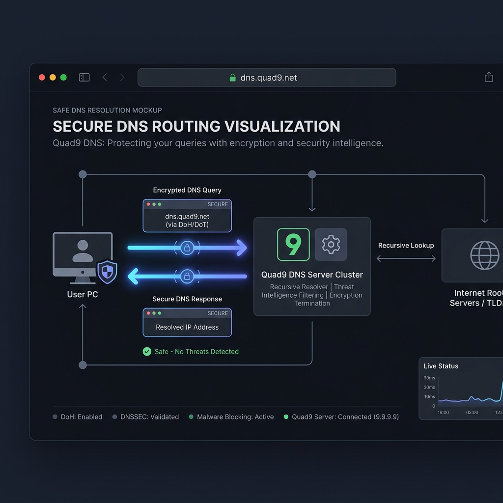
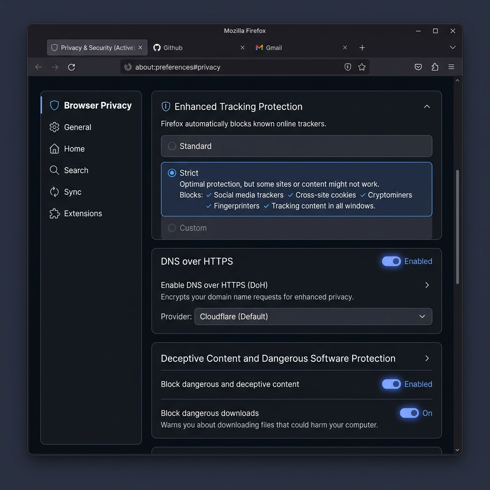
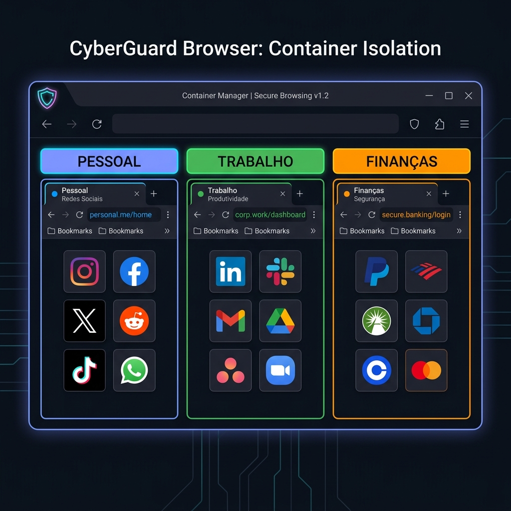

Eleve sua defesa digital ao próximo nível
Você completou a fundação. Agora é hora de proteger sua conexão, blindar seu navegador e isolar suas identidades online.
Roadmap Intermediário
Três módulos estratégicos que se complementam para criar uma camada robusta de proteção.
DNS Privado
Criptografe suas consultas DNS para impedir que seu provedor veja cada site que você acessa.
Navegador Seguro
Configure um navegador blindado contra fingerprinting, trackers e scripts maliciosos.
Separação de Identidade
Isole suas atividades online em perfis separados para que ninguém conecte os pontos.
Complete os módulos abaixo para avançar.
DNS Privado
Cada vez que você digita um endereço no navegador, uma consulta DNS traduz esse nome para um IP. Sem proteção, seu provedor de internet vê cada site que você acessa.
DNS Padrão
DNS Criptografado

compare Provedores DNS Recomendados
| Provedor | Anti-Malware | Zero Logs | DoH / DoT | Endereço |
|---|---|---|---|---|
| Quad9 | check_circle | check_circle | check_circle | 9.9.9.9 |
| Mullvad DNS | check_circle | check_circle | check_circle | 194.242.2.2 |
| NextDNS | check_circle | info | check_circle | Personalizado |
checklist Como Configurar (Passo a Passo)
Abra as configurações de rede do seu sistema
Windows: Configurações → Rede → Propriedades do Adaptador → DNS
macOS: Preferências do Sistema → Rede → DNS
Substitua os servidores DNS padrão
Troque para 9.9.9.9 (Quad9) ou 194.242.2.2 (Mullvad).
Ative DNS over HTTPS (DoH) no navegador
Firefox: Configurações → Privacidade → DNS over HTTPS → Ativar proteção máxima.
Verifique o funcionamento
Acesse dnsleaktest.com para confirmar que seu DNS está protegido.
Navegador Seguro
Seu navegador é a janela para a internet — e a principal superfície de ataque. Cada extensão, cookie e configuração padrão pode expor sua identidade.

Firefox
RecomendadoOpen-source, altamente configurável, suporta extensões de privacidade e containers.

Brave
AlternativaBloqueador nativo, baseado em Chromium. Bom equilíbrio entre privacidade e compatibilidade.

Tor Browser
Máximo anonimatoAnonimato absoluto com roteamento em camadas. Ideal para pesquisas sensíveis e whistleblowing.

tune Hardening do Firefox (Configurações Essenciais)
Enhanced Tracking Protection → Rigoroso
HTTPS-Only Mode → Ativar em todas as janelas
Cookies → Excluir ao fechar o navegador
Instalar extensão uBlock Origin
Desativar telemetria em about:preferences#privacy
Separação de Identidade
A compartimentalização impede que alguém conecte suas atividades entre si. Email pessoal, trabalho e finanças devem viver em mundos separados.

Pessoal
- mail Email pessoal (ProtonMail)
- forum Redes sociais
- shopping_bag Compras online
Trabalho
- mail Email corporativo
- cloud Serviços da empresa
- group Comunicação profissional
Finanças
- credit_card Banco e pagamentos
- lock Investimentos
- receipt_long Impostos e docs oficiais
build Ferramentas para Compartimentalizar
Firefox Multi-Account Containers
Crie containers isolados dentro do Firefox. Cada container tem seus próprios cookies, sem cruzamento.
Instalar extensão open_in_newSimpleLogin (Email Aliases)
Gere aliases de e-mail para cada serviço. Se um vazar, desative o alias sem afetar o resto.
Criar conta open_in_newPerfis de Navegador Separados
Crie perfis diferentes (Pessoal, Trabalho, Finanças) no Firefox ou Brave com configurações isoladas.
Senhas Únicas por Contexto
Use pastas/coleções no Bitwarden para organizar senhas de cada identidade de forma isolada.